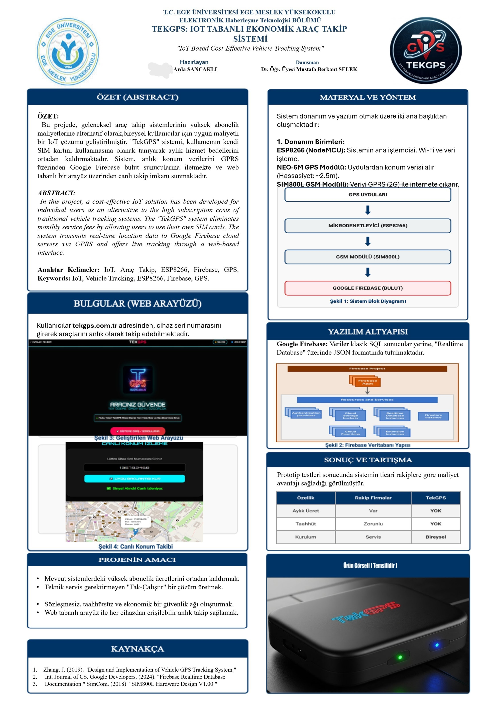

Kesintisiz uydu takibi ve anlık konum hizmeti.
Cihaz üzerindeki Seri Numarasını giriniz.
TekGPS, araç güvenliğinde yüksek hassasiyetli konumlandırma ve kesintisiz iletişim sağlamak amacıyla en güncel modüllerle entegre edilmiş yerli bir tasarımdır.
Bu sistem, uydu verilerini GSM ağı üzerinden doğrudan Firebase sunucularına aktararak size anlık ve gecikmesiz bir takip deneyimi sunar.

TekGPS cihazınızı aracınıza monte etmek oldukça basittir. Aşağıdaki adımları takip edin:
Cihazın yan kapağını açın ve PIN kodu kaldırılmış aktif bir SIM kartı yuvaya yerleştirin.
Kırmızı kabloyu aracın (+) kutbuna, Siyah kabloyu (-) şaseye bağlayın. Cihaz üzerindeki ışıklar yanmaya başlayacaktır.
Cihaz ışıkları sabitlendiğinde, bu sitedeki "Sisteme Giriş" ekranına seri numaranızı girerek takibe başlayabilirsiniz.
TekGPS, 2025 yılında İzmir'de kurulmuş yerli bir teknoloji girişimidir. Amacımız, araç güvenliğini herkes için ulaşılabilir ve uygun fiyatlı hale getirmektir.
Klasik sistemlerin aksine, sunucu maliyetlerini optimize ederek kullanıcılarımızdan aylık ücret talep etmiyoruz. Cihazı bir kere alırsınız, ömür boyu kullanırsınız.
© 2026 TekGPS - Tüm Hakları Saklıdır.